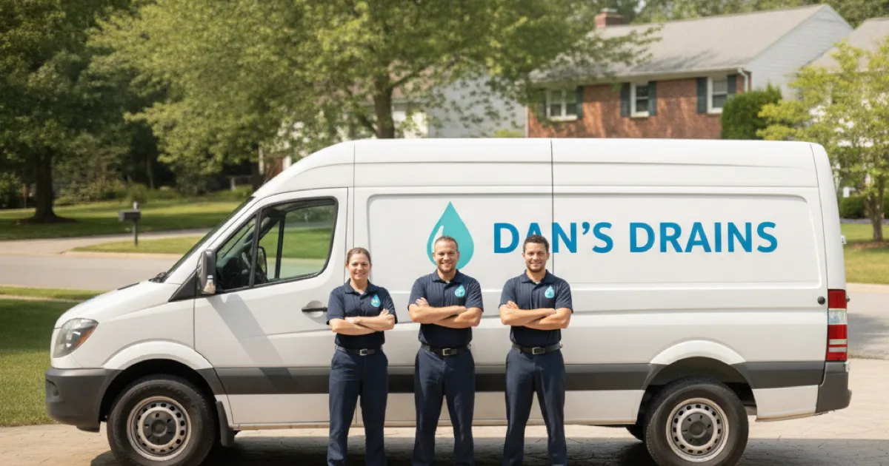
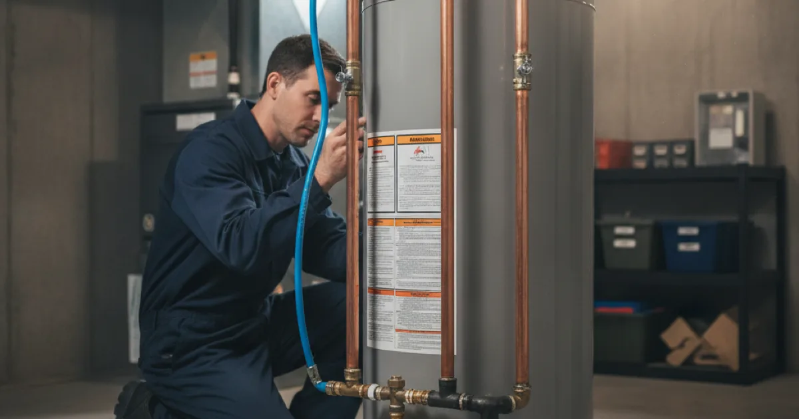

Your Licensed, Insured Plumber in Westchester County, NY
Dan's Drains is a local, family-run plumbing company based in Armonk. For over 15 years we have helped Westchester County homeowners with everyday repairs, emergencies, water heaters, drains, and more — with honest advice and upfront pricing.
- Licensed & Insured
- Same-Day Service Available
- Upfront Pricing
- 15+ Years Local Experience

Why Homeowners Call Dan's Drains
We are not a national franchise or a high-pressure sales company. We are a small local business that shows up when promised, keeps your home clean, and explains what is going on before we touch anything.
Local & Family-Run
Based in Armonk and serving Westchester County. When you call, you reach people who know the area and its older homes.
Honest, Upfront Pricing
We explain your options and give you a price before we start. No surprises, no pressure to buy more than you need.
Clean & Respectful
We treat your home like our own — shoe covers, tidy work areas, and no mess left behind.
15+ Years Experience
From quick fixes to bigger repairs, we have seen it across Westchester's mix of old and new plumbing.
Reviews & Google Business Profile
We are proud of the reputation we have built in Westchester County by doing honest work and treating people right. Verified reviews and our Google Business Profile will appear here.
Fast Emergency Plumbing Help
When a pipe bursts or water is spreading across the floor, you do not have time to shop around. We keep room in the day for urgent calls and will stay on the phone to help you shut off the water before we arrive.
Once we are there, we find the source, stop the water, and explain your options before starting. You get a clear price up front, not a frightening number after the fact.
For burst pipes and sudden leaks, count on our round-the-clock emergency response to get things under control quickly.


Water Heater Installation Done Right
A new water heater is a big purchase, so we help you get it right the first time. We size the unit to how your household actually uses hot water, then install it safely and to code.
Whether you want a straightforward tank replacement or you are weighing a tankless upgrade, we give you the honest trade-offs instead of pushing the priciest option.
See how we handle sizing and installing a new water heater for Westchester homes of every age.
Have a plumbing problem that will not wait? Let's talk today.
Drain Cleaning That Actually Lasts
A slow or clogged drain is more than an annoyance — it is a sign something is building up in the line. We clear the blockage and look at why it happened, so it does not come right back.
Being the company named Dan's Drains, this is bread-and-butter work for us. We do it clean, and we tell you if a recurring clog points to a bigger issue.
Learn what sets a thorough drain cleaning visit apart from a quick plunge-and-go.


Full Drainage & Sewer Services
Beyond a single slow sink, we handle the whole drainage picture: main-line clogs, grease, root intrusion, and video inspections to see exactly what is happening underground.
For homes on older clay or cast-iron lines — common in this part of Westchester — that camera work saves a lot of guesswork and digging.
Explore the full range of drainage and sewer solutions we offer across the county.
Serving All of Westchester County
We are based in Armonk and travel to homes and small businesses throughout the area. Our regular service areas include Armonk, Pleasantville, Mount Kisco, Yonkers, Bedford, and Scarsdale.
Because we work across the county every week, we know its housing stock well — from older homes with mixed pipe materials to newer builds with finished basements and sump pumps. That local knowledge helps us solve problems faster.
How Working With Us Works
We keep the process simple and clear from the first call to the finished job.
- Call or request an estimate. Tell us what is going on. For emergencies, we help you stop the water right away.
- We diagnose and explain. We find the real cause and lay out your options in plain language.
- You get an upfront price. You approve the price before we begin — no surprises.
- We do the work cleanly. We complete the repair, test it, and leave your home tidy.
Licensed, Insured, and Local
Dan's Drains is a licensed and insured plumbing company holding a Westchester County plumbing license. We carry the credentials that matter and back our work with clear communication and clean workmanship.
- Licensed & insured plumbing
- Westchester County licensed plumber
- Residential & light commercial
- 15+ years of local experience
- Same-day service available
- Upfront, honest pricing
Frequently Asked Questions
What areas do you serve?
We are based in Armonk and serve homeowners and small businesses across Westchester County, including Pleasantville, Mount Kisco, Yonkers, Bedford, and Scarsdale. If you are nearby and not sure whether you are in our area, just call and ask.
Do you offer same-day plumbing service?
Yes, same-day service is available for many repairs, and we keep room in the schedule for urgent problems like leaks and clogged drains. Call early in the day when you can, and we will tell you honestly what is realistic.
Are you licensed and insured?
Yes. Dan's Drains is a licensed and insured plumbing company, and we hold a Westchester County plumbing license. We handle both residential and light commercial plumbing.
Will I know the price before work starts?
Yes. We believe in upfront pricing. We look at the problem, explain your options in plain language, and give you a price before we begin, so there are no surprises when the work is done.
Do you handle emergency plumbing?
We do. For burst pipes, major leaks, and no-water situations, reach out right away and we will walk you through shutting off the water and get to you as fast as we can. Learn more on our emergency plumbing help page.
What kinds of plumbing do you work on?
Everyday repairs, water heaters, drain and sewer work, leak repairs, fixtures, sump pumps, gas lines, and light commercial plumbing. If you are not sure whether we cover it, ask — we would rather point you in the right direction than leave you guessing.
Ready for a plumber who answers the phone and shows up? Call Dan's Drains today.